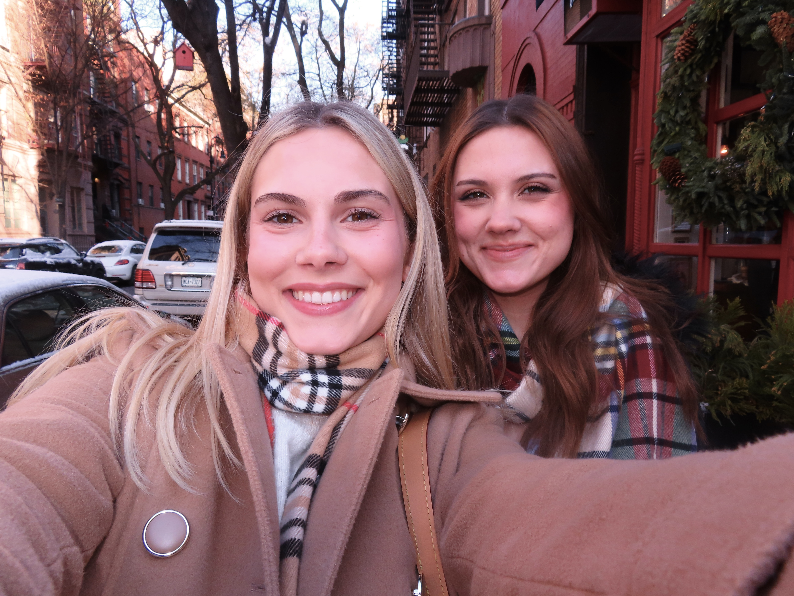

About Me!

Background
I grew up as the middle child in a blended family in Northeast Texas and have never lived anywhere else; I think that's probably where my love for all forms of media and culture studies comes from, because there's not a lot of interesting things going on in Paris. I want to work in a creative field post-grad, but I'm not really sure what exactly I want to do yet, so I'm always willing to take classes about topics I haven't explored before!
What I Want to Learn
I'm really excited to learn the basics about some different coding languages! I almost started teaching myself HTML this summer because I thought the concept of creating your own website was so cool--I'm especially looking forward to making a cute portfolio and learning more ways to potentially customzize my experience/accounts on other platforms I use.
Academic Interests
I've always been fascinated by the human experience, the ways that technology, and the environment, and seemingly everything identifiable can change, but the struggles and emotions of people are constant. The concept of reading and relating to something that was written 2000 years ago is what initially drew me to literature and history, and every other class I've taken at TCU has gradually evolved from that intersection.
Something that I'm realizing more and more is the importance of intentionality in creative fields, and that there are many forms left to explore that can be used to convey those same intangible experiences that've drawn me to media since I was little. Of those forms being coding! I never considered technical writing to be similar to poetry or prose, which I now know was a great oversight on my part, and I've been enjoying having a new avenue to explore creativty and express myself.
Fun Facts
If you've made it this far into my page, here are some little tidbits about me:
- My star sign is Leo
- I love k- and j-pop, but I've never been to a concert for an Eastern artist
- I love to craft! My current hobby has been making decor for my room
- My little sister (see above) is only 14 months younger than me
- I'm very opinionated about pretty much everything (check out my Favorites Tracker to see what I've been into recently)